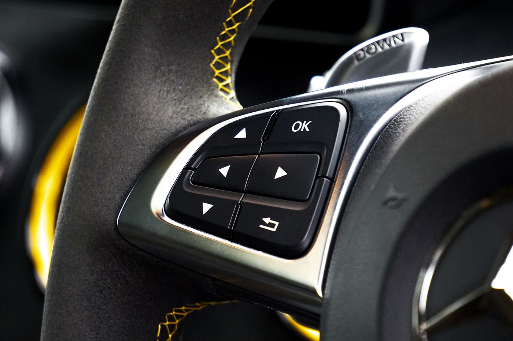
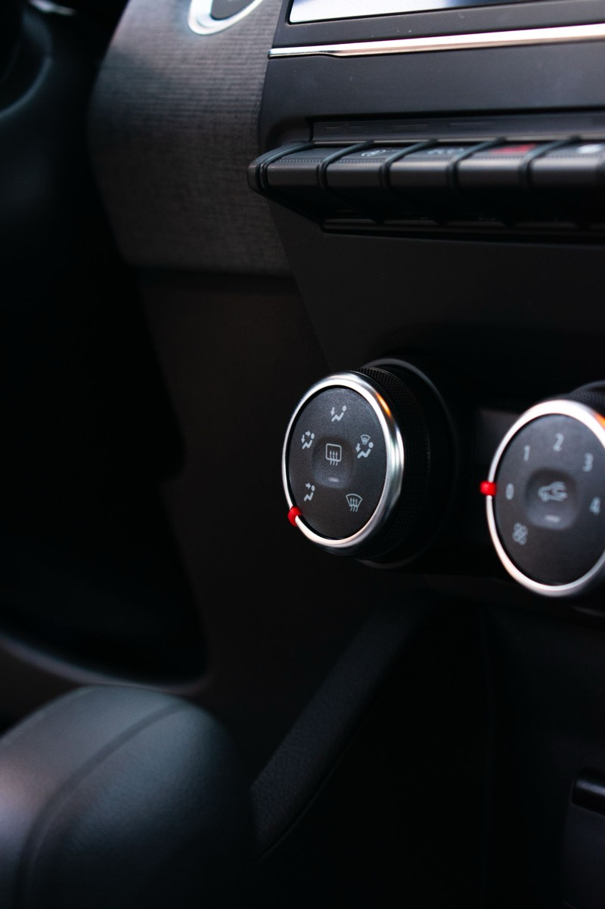
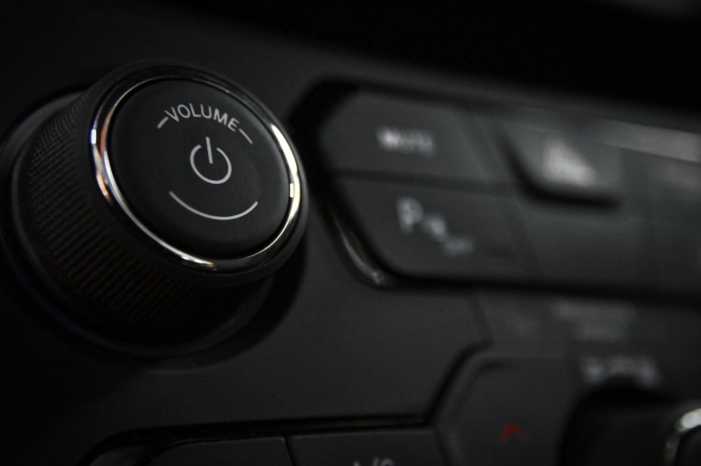

Audi Says It Went Too Far on Screens. The Rollers Are the Tell.
Audi has gone as far as it is going to go with touchscreen controls, its US product chief said, and the next generation of interiors will move back toward physical switchgear. The admission came from Filip Brabec, Senior Vice President of Product Management at Audi of America, in an interview with T
Audi says it has gone as far as it will go with touchscreens, and the next interiors go back to physical controls. Filip Brabec, Audi of America’s SVP of Product Management, told The Drive: “the general tendency is definitely to more mechanical controls.”
The admission landed on 11 November 2026, a decade after Audi put the first big central screen in a production car — so the company arguing for buttons is the same one that started the trend it is now reversing.

Audi has gone as far as it is going to go with touchscreen controls, its US product chief said, and the next generation of interiors will move back toward physical switchgear.
The admission came from Filip Brabec, Senior Vice President of Product Management at Audi of America, in an interview with The Drive published November 11, 2026. Asked whether cars have reached peak screens, Brabec said: “I think we’ve again gone as far as we will possibly go.”
He was more direct about direction: “the general tendency is definitely to more mechanical controls. We absolutely view that as the right thing.”
Why the steering wheel is the interesting part
Brabec pointed to the rollers already on Audi steering wheels and said they are “maybe only the beginning, you’re gonna see more.”
That is a specific claim, and it is the one worth holding Audi to. Steering wheel rollers are the cheapest possible test case: they sit where a driver’s thumbs already rest, they cost little to add, and they absorb functions that would otherwise require a reach to the centre stack. If Audi’s plan is real, you will see function migrate to the wheel before you see it return to the dash.
The wider change is tied to a design generation Audi calls “Radical Next,” developed with Gernot and Massimo Frascella. Brabec framed the shift as part of that programme rather than a running change.

Audi is not really in charge of this
The most candid part of the interview is about why the screens went in at all.
Brabec attributed the trend to China and to EVs, then added: “in some cases you have to consider that we are part of a global equation and we don’t always have the strongest voice depending on what car is going where.”
That is a US executive saying Audi of America does not decide its own interior layout. North America is one market in a global product plan, and the interior is the most expensive thing to localise — a different dash is a different crash structure, wiring harness and tooling set. If a car is engineered screen-first for one market, the US version inherits it.
Which is why the interesting question is not whether Audi has changed its mind. It is whether the global programme has. Brabec’s own answer implies that until “Audi” rather than “Audi of America” decides, the US arm can advocate but not guarantee.

What this does not mean
It does not mean screens are going away. Brabec is describing a course correction, not a reversal — more mechanical controls, with the display retained for the things a display is genuinely good at.
It also does not come with a timeline. No model, no model year, and no statement that any current vehicle will be retrofitted. Owners of current cars should expect nothing to change on their dashboard.
Why buttons are hard to put back
The reason this announcement is worth reading carefully rather than celebrating is that reversing a screen-first interior is not a software decision. It is a tooling decision.
A physical control has to land somewhere. That means a hole in a panel, a switch with a part number, a connector, a wire in a harness, and a place in the assembly sequence. On a screen-first dash, the panel was designed without the hole and the harness was designed without the wire. Adding them back means new tooling for the panel — and panel tooling is among the most expensive items in a vehicle programme, amortised over the life of the model.
That is why manufacturers tend to make this change at a generation boundary rather than mid-cycle, and why Brabec ties it to “Radical Next” instead of to an existing car. A promised return of buttons is cheap to say in an interview and expensive to execute in a factory.
The other constraint is the one Brabec named directly: a US-specific interior is hard to justify. If the global car is engineered screen-first, the US arm can ask for changes but is negotiating against volume in other markets.
What Audi is actually conceding
Read closely, Brabec’s remarks are less “we were wrong” than “we are being made to do this.” He does not argue that the touchscreen was a bad idea on its merits. He says the trend went as far as it will go, that the general tendency is toward mechanical controls, and that Audi views that as the right thing — while noting that Audi of America does not always have the strongest voice.
That framing puts the change in the category of responding to pressure rather than reversing a belief. It is the same posture several manufacturers have taken: acknowledge the complaint, promise the fix, and attach it to a future product far enough out that nothing on the lot today has to change.
What you can do now
If you are shopping and buttons matter to you, the useful move is not to wait for “Radical Next.” It is to look at what a specific car actually has on its centre stack today. Several current models across brands still ship with physical climate controls, and a rotary volume knob has never stopped being available on some trim of almost everything.
The risk in waiting is that the promised returning buttons arrive on a future generation, at a future price, on a car you have not seen yet.
What we could not verify
Everything here rests on a single interview with one executive. Audi has not published a written policy, a specification, or a date. We could not confirm which models get mechanical controls first, how far the change reaches, or whether “Radical Next” interiors will actually differ from current ones in the US-market cars.
We also could not verify the claim about Chinese-market influence beyond Brabec’s own description. It is his account of internal decision-making, not a documented process.
Given that buyers have been told to expect button returns before and mostly have not received them, the reasonable posture is to wait for a production interior.
Source: The Drive, “Audi Says Touchscreens Have Gone as Far as They’ll Go. Buttons Are Coming Back,” updated November 11, 2026, quoting Filip Brabec of Audi of America.
CarModReview may earn a commission from purchases made through links on this page, at no extra cost to you.
Topics
- Electrical